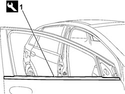

7005D26 FRONT SIDE DESCENDING WINDOW GLASS SCRAPER (OUTER) (ONE), LEFT OR RIGHT- R.R
- Path
- Procedures > 70 FITTINGS > 7005 PASSENGER COMPARTMENT FRONT SIDE DOORS > 7005D FRONT DOOR WINDOW GLASSES > 7005D26 FRONT SIDE DESCENDING WINDOW GLASS SCRAPER (OUTER) (ONE), LEFT OR RIGHT- R.R
- Kind
- repair procedure (removal / refitting; the operation number is the code)
- Applies to
- all engines; all production periods
- Interactive page
- https://sloeber94.github.io/elrnDB-fCrm/en/#/194000859
Applies to: all engines; all production periods
 Removing
Removing
 Refitting
Refitting- Place the window in the fully open position.
Op. 7005E12 CORNER COVER FOR ONE FRONT SIDE DOOR, LH OR RH - R.R.
Op. 7005R30 ELECTRICALLY CONTROLLED DOOR MIRROR (ONE) - R+R
1. Prise up the glass scraper from its seat and remove.
Tool | Description | Function | Validity |
|---|---|---|---|
1878077000 | Knife | Retainer removal |

Applies to: all engines; all production periods
Refitting
Removing- Check that the outer glass scraper is not damaged.
- Fit the outer glass scraper trim.
Op. 7005R30 ELECTRICALLY CONTROLLED DOOR MIRROR (ONE) - R+R
Op. 7005E12 CORNER COVER FOR ONE FRONT SIDE DOOR, LH OR RH - R.R.
Topics linked from this page (2)
- 7005E12 CORNER COVER FOR ONE FRONT SIDE DOOR, LH OR RH - R.R.
- 7005R30 ELECTRICALLY CONTROLLED DOOR MIRROR (ONE) - R+R
Topics that link to this page (17)
- T001 WIND NOISE FROM THE FRONT DOORS
- V005 FRONT DOOR WATER PENETRATION
- 7005OA FRONT DOOR WIND NOISE LOCALISATION
- 7005A09 FRONT SIDE DOOR INTERIOR SUPPORT FRAME - R.R.
- 7005A28 FRONT SIDE DOOR LIMITER - R.R.
- 7005C11 FRONT SIDE DOOR EXTERIOR HANDLE - R.R
- 7005C15 FRONT SIDE DOOR LOCK BARREL (IN HANDLE) - R+R
- 7005C40 CONNECTION LINK BETWEEN FRONT SIDE DOOR INTERNAL OPENING MECHANISM AND CATCH ONE LH OR RH R R
- 7005C43 LINK CONNECTING FRONT SIDE DOOR BARRELS/CATCH - R+R
- 7005D15 FRONT SIDE DOOR DESCENDING WINDOW GLASS (ONE) LEFT OR RIGHT - R.R
- 7005D18 FRONT SIDE DOOR DESCENDING WINDOW GLASS CHANNEL (ONE), LEFT OR RIGHT - R.R
- 7005D33 CHANNEL FOR DOOR DESCENDING GLASS INNER GUIDE (ONE) LH OR RH ON FRONT SIDE DOOR - R.R.
- 7005E50 FRONT SIDE DOOR PILLAR TRIM (ONE) LH OR RH - R.R.
- 7005M26 ELECTRIC WINDOW MECHANISM FOR ONE FRONT DOOR LH OR RH - R.R
- 7005N21 FRONT SIDE DOOR LOCK MOTOR/LOCK ASSEMBLEY FOR ONE DOOR, LEFT OR RIGHT - R.R.
- 7205E36 STRIPPING FRONT SIDE DOOR
- 7205E37 STRIPPING FRONT SIDE DOOR INTERIOR SUPPORT FRAME